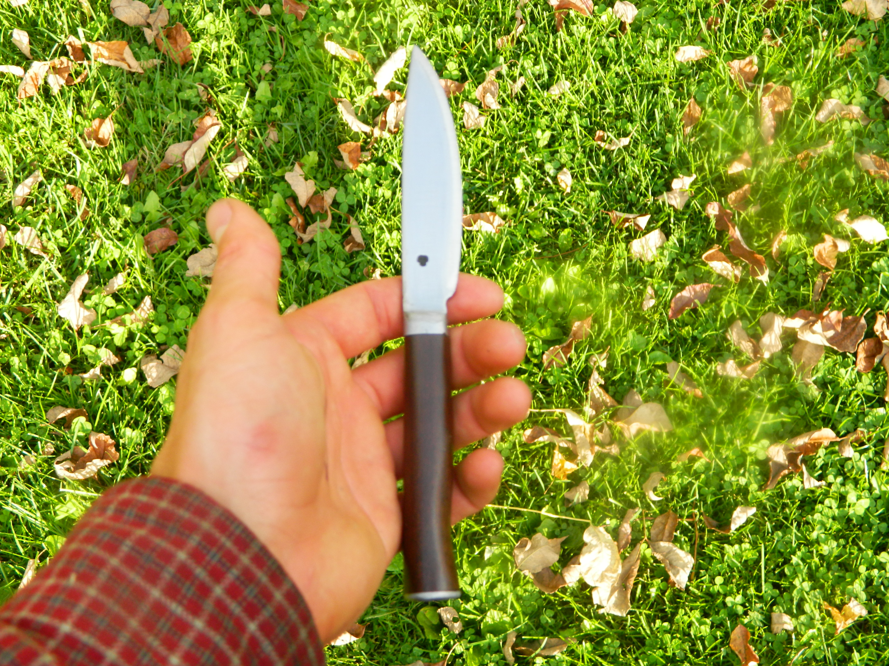
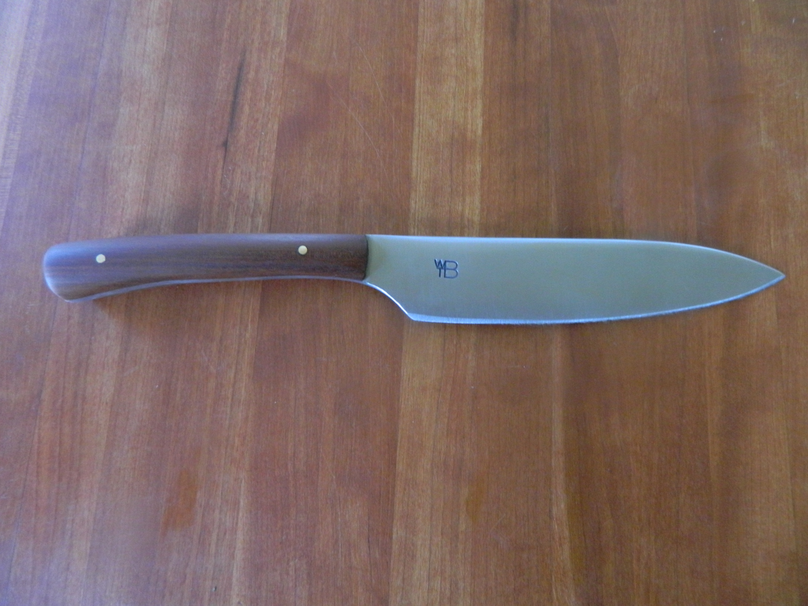

Home
Breese Forge is a custom bladesmith and blacksmith shop located in Upstate New York, U.S.A.. A Breese Forge product is truly unique, with all manufacturing, finishing, and packaging done by hand. No computer machining is done on a Breese Forge knife, and even the forging is done entirely with hand hammers- no presses or power hammers, which are present in most modern smith's shops. It is common for a modern knife maker to simply grind out blades, but Breese forge is able to create a superior blade by employing nearly lost forging techniques, which are explained in further detail on the about page of this website. We believe that complete and utter dedication to a craft, as well as the desire to always improve, allows a superior product to be made.
Integral Blacksmithing is a craft dating to approximately 1000 B.C., which also happens to be, in the opinions of some historians, around the time when man began the transition from survival to true advancement in the fields of science, literature, religion, and agriculture. This alignment is not coincidental. The advent of iron tools, weapons, and commodities allowed man to better partake in agriculture, defense from animals, and architecture. The blacksmith in a village of this time period (up to the 1700s) manufactured every metal object used by the village- from nails to swords to locks. Due to their importance, blacksmiths often held positions of religious and political power. As modern manufacturing methods were developed, however, the blacksmith and his tools became obsolete. During and after the Industrial Revolution the craft of blacksmithing was almost entirely lost, but it has recently undergone a resurgence. ChefBreese Forge is extremely proud to be a part of this resurgence and we strive to constantly improve our products, both in form and in function.
All Breese Forge Products are 100% guaranteed for life. If anything goes wrong with a knife or other piece it can be sent in for repairs, free of charge.
Enjoy supporting a true craft,Wyatt Breese, 15 year old smith